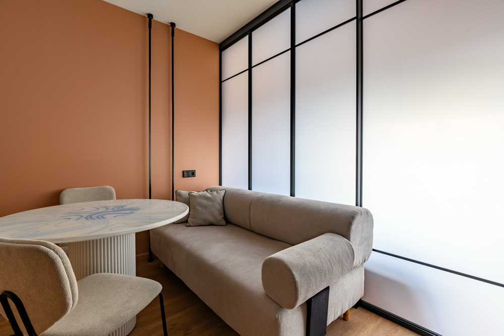
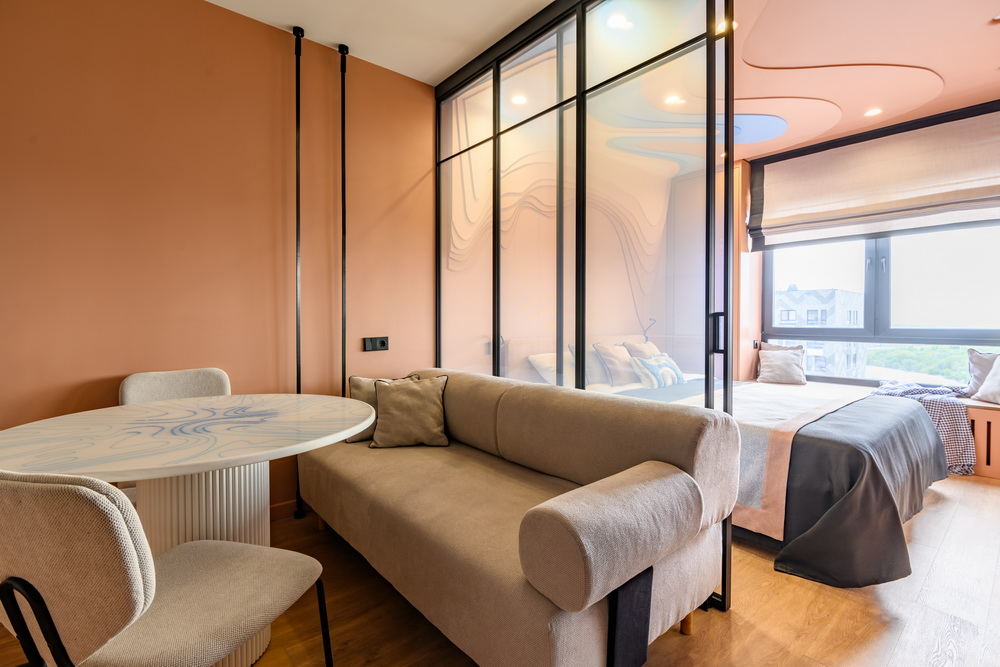
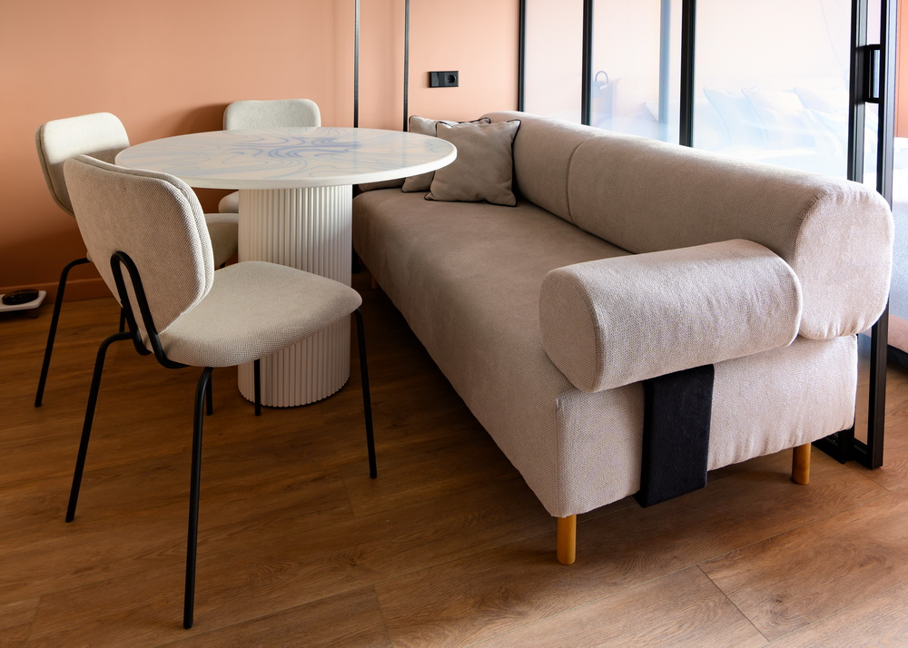
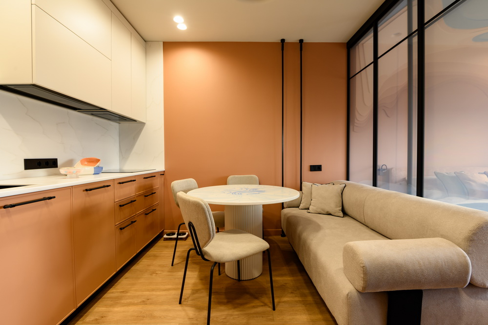
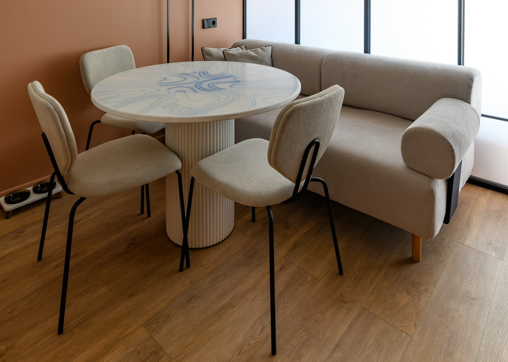

Компактная мягкая мебель для многофункционального интерьерного пространства. Диван был разработан с учетом ограниченной площади, трансформации помещения и общей пластики интерьера.
Смотреть выпуск →


